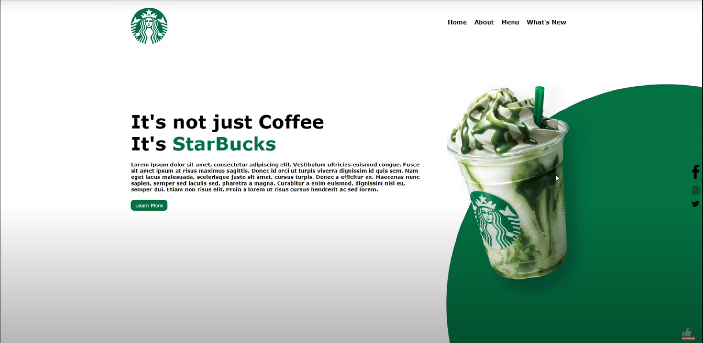

Pagina do Trabalho de Front-End:
O que é o Front-End?
Podemos classificar como a parte visual de um site, aquilo que conseguimos interagir. Quem trabalha com Front End é responsável por desenvolver por meio do código uma interface gráfica e, normalmente, com as tecnologias base da Web: HTML, CSS e JavaScript.
Algumas pessoas podem confundir um pouco esse trabalho com o que um designer faz, pois no passado existia uma entidade chamada Webmaster que fazia tudo isso e mais um pouco, mas a diferença aqui é que o designer vai utilizar alguma ferramenta visual para desenhar a interface, do Photoshop ao Sketch e, quem faz Front-End, estará mais próxima do código em si, que irá rodar num navegador Web como o Chrome, Firefox ou Safari.
Site Alura.

Canal de Conteúdo:
Eu escolhi o canal Alura. Alura é uma plataforma de educação à distância, que oferece cursos de tecnologia, e conta atualmente com 1277 cursos e mais lançamentos semanais e atualizações.
Tutorial:
Como Criar um Website Moderno com HTML & CSS | TEMPLATE PARA ACADEMIA/ESPORTES/FITNESS:
Pagina Finalizada:
Podcast:
Influenciador de Conteúdo:
Para influenciadora eu escolhi a Gabriela Vaz (Gabcodes) que é uma desenvolvedora brasileira que está atualmente morando no Canada, ela desenvolve Front-end e tambem é criadora de conteúdo.